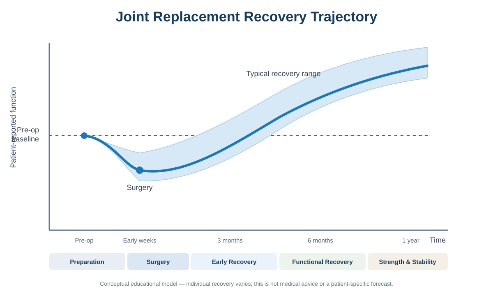

A structured framework to help patients understand the journey before and after joint replacement surgery.

Recovery from joint replacement typically follows a recognizable trajectory involving preparation, surgical intervention, early recovery, and long-term mobility rebuilding.
Additional resources and guidance will be added soon.